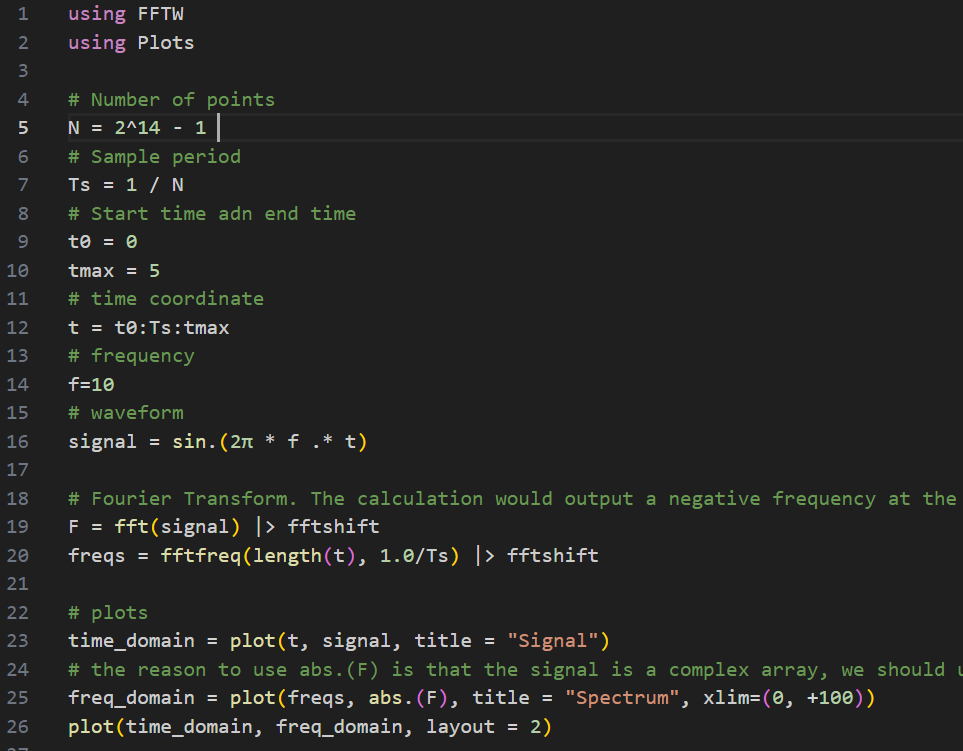

The programs are about acoustics.
Generate audio signal
FFT(Fast Fourier Transform)
Acoustic knowledge(Engineering)
Acoustic knowledge(Theoretical)

1. Import the package WAV
2. Set sampling rate, time step, frequency, and the waveform of the signal
3. wavwrite function can generate wav file, user should provide waveform(y), filename, and sampling rate
4. wavread function can read the waveform and the sampling rate out
5. wavappend function append signal to the original wav file
* You can find the installation method on Julia website, just follow the procedure

1. Several package should be imported to this program
2. The usage of function "fftshift" shift the result to the correct position because the output of the fft function is stored in an array but the front half data is for negative frequencies
3. fftfreq function calculate the correct frequency array for later plotting
1. Clipping: A form of distortion that limits a signal once it exceeds a threshold
2. Equal-loudness contour: A measure of sound pressure level over the frequency spectrum, for which a listener perceives a constant loudness when presented with pur steady tones. By this graph, we can know that human ears are sensitive to what frequency range
3. Phon and Sone: Both are loudness unit. Former is logarithmic unit and later is linear unit.
4. THD+N: Total harmonic distortion plus noise, a common metric used in speaker evaluation and audio engineering to quantify the amount of distortion and noise present in the output of a speaker or audio system
5. dBFS: dB full scale, the amplitude of a signal compared with the maximum which a device can handle before clipping occurs
6. Dynamic range: The ratio between the strongest un-distorted signal on a channel and the minimum discernible signal
7. SNR: Signal-to-noise ratio, a measure used to compared the level of a desire signal to the level of background noise
8. SPL, SWL: Sound pressure level and sound power level
10. AGC: Auto gain control
11. 3QUEST: 3-fold quality evaluation of speech in telecommunication. Used to evaluate the quality of noise depression algorithm working in various noisy environment.